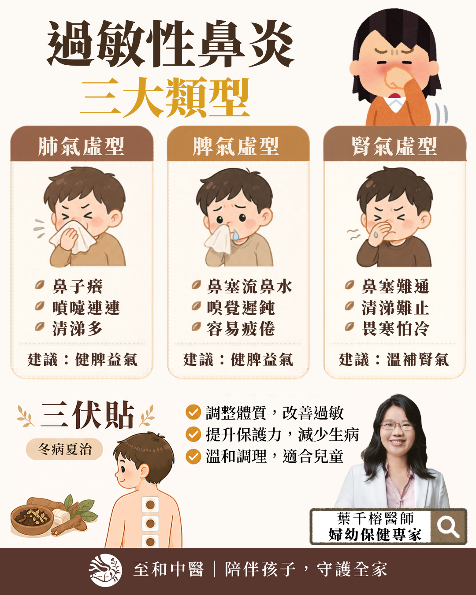
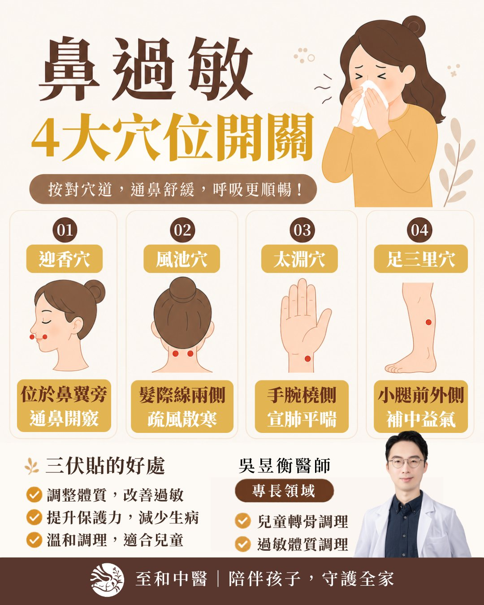
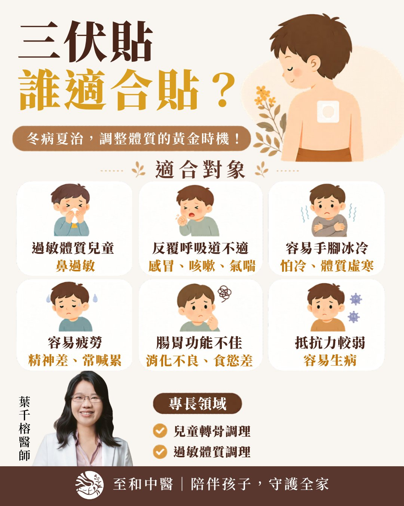

至和中醫診所
過敏衛教專區
鼻過敏・三伏貼・體質調理
醫師衛教圖解



立即預約門診
選擇離您最近的院所・找專屬醫師諮詢
推薦醫師｜葉千榕 · 婦幼保健專家
大寮院所
調經／助孕／中風／運動傷害
LINE 預約 ›
推薦醫師｜吳昱衡 · 兒少成長專家
鳳林院所
轉骨／性功能障礙／痠痛／睡眠
LINE 預約 ›
推薦醫師｜林怡君 · 婦兒調理專家
新富院所
月經／轉骨／過敏／更年期
LINE 預約 ›
推薦醫師｜陳映融 · 轉骨專家（副院長）
鼎山院所
轉骨／過敏／感冒咳嗽／失眠
LINE 預約 ›